Calibration of the ATE Driver Data Eye Height for Receiver Sensitivity Measurements
Jose Moreira, Verigy
Callum McCowan, Verigy
Zheng-Yong Wen, Verigy
Yao Zhang, Verigy
Yuan He, Verigy
Wei-Min Zhang, Verigy
Paper-ID: 120512 April 2010
Abstract
With device data rates in high-speed digital applications already above 5 Gbps for standards like PCI Express III, Serial ATA 3, GDDR5, etc., high-speed effects can have a significant influence on the receiver sensitivity test due to the ATE driver performance and DUT board effects. This paper presents a procedure to compensate for these effects by focus calibrating the ATE driver at the DUT socket.
Key Words: Focus Calibration, Receiver Sensitivity, Data Eye Height.
Introduction
With the increase in the data-rates of high-speed digital interfaces, the DUT board is becoming the major performance bottleneck in an ATE system [1]. Although modern pin electronics architectures like the V93000 PinScale HX and HSM6800 include embedded equalization to address the DUT board loss issues [2,3] they cannot completely compensate for DUT board signal traces that are very lossy due to long signal trace lengths. The other important point is that measurement instruments like an ATE system have the driver levels usually calibrated only at DC and at the pogo pin location. Although Verigy provides specifications for the ATE driver data eye height at different data rates, these specifications do not take into account the DUT board signal path loss. Figure 1 shows a block diagram of a receiver sensitivity test example where it is assumed that there is a loopback mode in the DUT I/O cell. The objective is to reduce the ATE driver data eye height until a fail is detected by comparing the transmitted and received patterns at the ATE pin electronics.
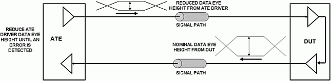
Figure 1: Example of a receiver sensitivity test where a loopback is used on the DUT I/O cell (reproduced with permission from [4]).
The challenge for the receiver sensitivity test in the presence of a lossy DUT board is shown in figure 2. The figure shows the data eye at the end of a lossy DUT board signal path for different data rates. It is easy to see that the data eye gets more degraded with the increased data rate including a smaller data eye height and additional deterministic jitter in the form of inter-symbol interference jitter (ISI).
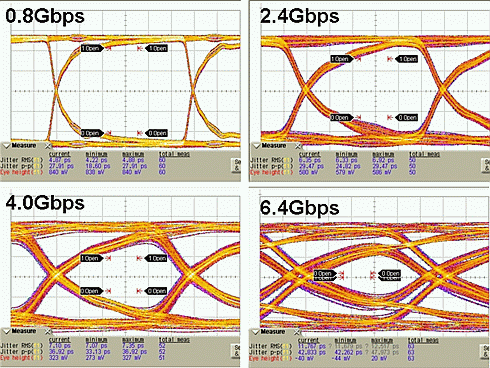
Figure 2: Example of the degradation of the data eye at the DUT for a lossy DUT loadboard (reproduced with permission from [4]).
In a receiver sensitivity test, the objective is to verify the minimum amplitude at which the DUT receiver can still correctly identify the bits in a stimulus pattern. In the presence of a lossy DUT board signal trace, the waveform will look similar to the waveform presented in figure 3. In this waveform the signal trace loss will reduce the bit amplitude depending on the previous bits (ISI). In a receiver sensitivity test, the amplitude of the smallest bit is the critical value since this is the bit that will be generating the bit failure when its amplitude is below the receiver sensitivity threshold.
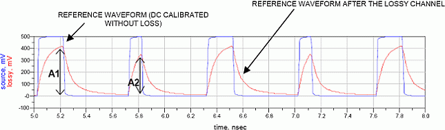
Figure 3: Amplitude reduction in an individual bit due to the previous bits history (ISI).
The above results show that it is crucial for high-speed digital applications using lossy DUT loadboards where the pin-electronics equalization is unable to fully compensate for the loss, to calibrate the ATE driver eye height at the DUT socket.
Driver Data Eye Height Focus Calibration Hardware Setup
To perform a driver data eye height focus calibration it is necessary to measure the data eye at the DUT socket using a high-performance measurement instrument like a real-time or equivalent-time oscilloscope. Several techniques can be used to probe the DUT board socket via pads or the socket. In [5,6] an approach is presented using a micro-coaxial probe and an interposer as shown in figure 4. figure 5 (left) shows a block diagram of the hardware measurement setup. In this setup the trigger for the oscilloscope is provided by an external RF clock source that also provides a 10 MHz reference signal to the V93000 master clock. It is also possible to use another ATE channel as trigger but in setups where it is not available this approach is a good alternative. figure 5 (right) shows a picture of a focus calibration setup used with the V93000. In this setup an Agilent Technologies 8257C 20 GHz RF source and an 86100C equivalent time oscilloscope with a 70 GHz remote sampling head (Agilent Technologies 86118A with option H01) are used for measuring the ATE driver data eye height at the DUT socket.
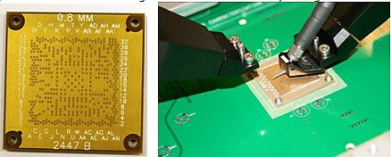
Figure 4: Interposer example (left) and probing the DUT board via pads to the socket using a micro-coaxial probe through the interposer (right) [5,6].
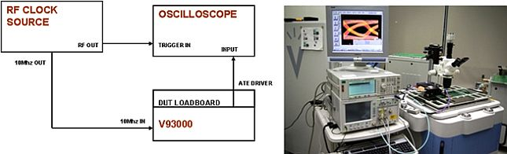
Figure 5: Block diagram of the hardware setup for the ATE driver data eye height focus calibration (left) and picture of the focus calibration hardware (right).
Although the instrument control is done automatically as will be discussed in the next sections, the positioning of the measurement probe on the socket must be done manually. This raises the question if the probe positioning could also be done automatically through a robotic system. Although this approach is feasible, the fact that DUT loadboards, sockets and package ball-out are application dependent coupled with the need to perform the focus calibration only once per DUT board makes the development and usage of a robotic probing system not very cost efficient.
Driver Data Eye Height Focus Calibration Software Setup
To perform a focus calibration that is repeatable and does not require a huge effort from the test engineer performing the focus calibration, it is critical to automate the instrument control and data acquisition. This should also provide a better repeatability of the results. The strategy was then to develop a stand alone program that communicates with SmarTest via the TPIC library as shown in figure 6. This stand-alone program also uses the SmarTest software to communicate with the GPIB controlled measurement instruments thorough the Smartest GPIB API's. The focus calibration software only requires a valid model file that includes the LAN/GPIB setup, external reference definition (if used), the V9300 configuration and a running SmarTest session.
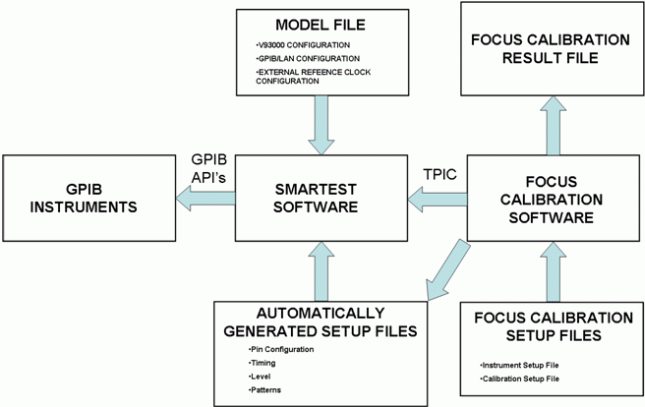
Figure 6: Focus calibration SW block diagram.
The focus calibration software uses two XML type files created by the user that define the complete instrument setup and the focus calibration settings and uses these files to automatically generate the pin configuration, timing, level and patterns that are needed for the focus calibration. The focus calibration software also writes the calibration results to an XML type file as shown in figure 7. To improve the usability of the focus calibration software, a GUI was created using GTK+. Figure 8 shows the GUI.
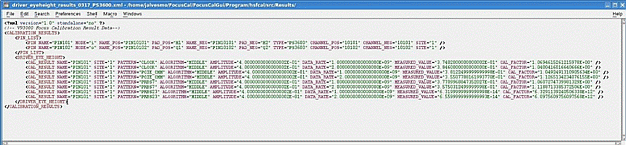
Figure 7: Example of calibration results file in XML format.
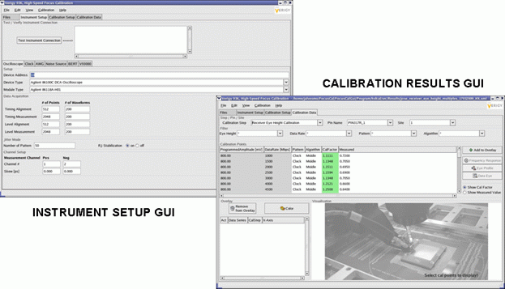
Figure 8: Focus calibration concept demonstration software GUI.
Data Eye Height Measurement Algorithm
The Agilent Technologies 86100C equivalent time oscilloscope is used as the measurement instrument on the focus calibration setup described in this paper. Although the instrument has an automatic function to compute the data eye height from a measured data eye diagram, this algorithm does not provide the needed performance for our calibration objectives. Because of this, a custom algorithm was created using the vertical and horizontal histogram features of the 86100C. figure 9 shows a block diagram of the developed algorithm.
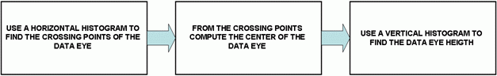
Figure 9: Block diagram of driver data eye height measurement algorithm in the Agilent Technologies 86100C equivalent time oscilloscope.
Using the Focus Calibration Data on a Testflow
As already discussed in a previous section, the measured driver data eye height and the corresponding calibration factors are saved in a file using an XML format. To use the calibration data in a device testflow it is first necessary to load the calibration file into an internal database and then access the data to compute the required calibration factor as shown in figure 10. To perform this task a testmethod library was created that provides methods to load a calibration file into memory and also to retrieve the calibration factor for a specific setting. Note that for setting values that do not correspond to a setup that was used in the focus calibration, the software will perform an interpolation for computing the calibration factor.
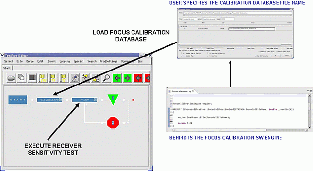
Figure 10: Example of using the focus calibration data in a testflow.
Example
The techniques presented in the previous sections were applied to a customer DUT board for a chipset application that includes multiple high-speed digital I/O interfaces. This customer performs a thorough characterization of these interfaces using an ATE system and because of this it is critical to calibrate the ATE system performance at the DUT socket. figure 11 shows the results of the driver data eye height calibration of one channel of the DUT board between 4.8 Gbps and 8 Gbps. The used pin electronics card was PinScale HX.
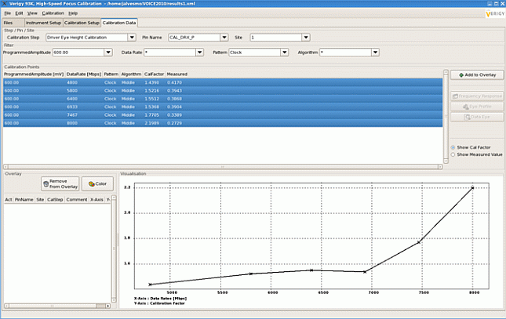
Figure 11: Driver data data eye height focus calibration results for one channel.
Figure 12 shows another DUT board channel but this time for two different patterns: clock and PRBS7 and data rates between 1 to 5 Gbps. The results show that as expected the calibration factor varies not only with data rate but also with the data pattern.
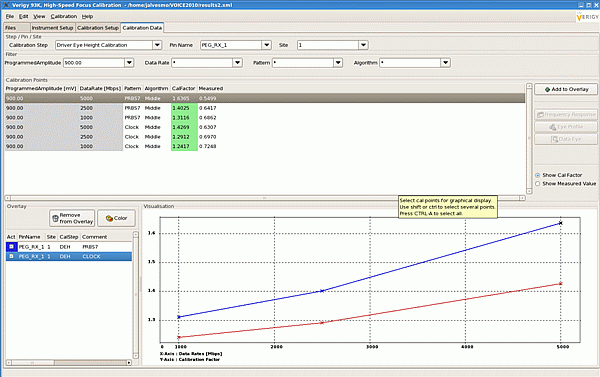
Figure 12: Comparing the driver data eye height calibration results between a clock and a PRBS7 data pattern.
Conclusions
This paper presented an approach for the focus calibration of the ATE driver eye height with emphasis on its application for receiver tolerance testing.
The results show how the accuracy at the DUT socket can be improved with this approach. This improvement becomes more significant the lossier the DUT board is and the higher the data rate. A software tool was developed to automate the instrument control, collect the data and also allow the usage of the calibration data in a testflow. The software is currently a demonstration vehicle for this technology being evaluated at some selected customers. The official release will depended on the customer feedback. In any case, additional development is still needed to make this tool ready for deployment.
References
[1] Jose Moreira, Ming Tsai, Jonathan Kenton, Heidi Barnes and Don Faller "PCB DUT board Design Challenges for Multi-Gigabit Devices in Automated Test Applications", IEC DesignCon, 2006.
[2] Bernhard Roth and Jose Moreira, "Equalization in the HSM6800 Pin-Electronics", Verigy VOICE User Group, 2010.
[3] Jose Moreira, Heidi Barnes, Mike Howieson, Mark Broman, "Passive Equalization of DUT Loadboards for High-Speed Digital Applications", Verigy VOICE User Group, 2007.
[4] Jose Moreira and Hubert Werkmann, Testing High-Speed Digital Interfaces with Automated Test Equipment, Artech House, 2010.
[5] Heidi Barnes, Jose Moreira, Michael Comai, Abraham Islas, Francisco Tamayo-Broes, Mike Resso, Antonio Ciccomancini, Orlando Bell and Ming Tsai, "Performance at the DUT: Techniques for Evaluating the Performance of an ATE System at the Device Under Test Socket", IEC DesignCon, 2008.
[6] Jose Moreira and Bernhard Roth, "Characterization and Focus Calibration of ATE Systems for High-Speed Digital Applications", IEC DesignCon, 2009.